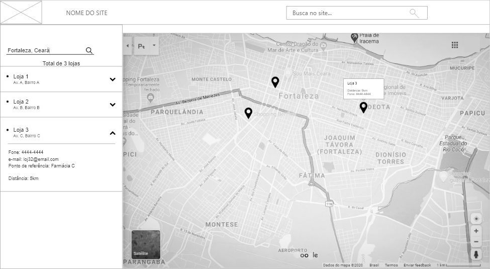

Localizador de lojas
Exemplo do padrão localizador de lojas.
Informações
Os usuários precisam encontrar uma loja (física) perto de um local específico.
Permitir que os usuários "procurem" por uma loja e mostrem os resultados em um mapa.
Você está projetando um site para uma organização que possui lojas físicas associadas a ele. Não precisa ser uma "loja", mas também pode ser um departamento ou escritório diferente dessa organização. Normalmente, você encontra um localizador de lojas no site de comércio eletrônico, site corporativo, site automotivo ou site do museu. O uso de um localizador de lojas exige que seja encontrado um grande número de lojas; caso contrário, é melhor simplesmente listar as lojas.
Um localizador de lojas é um tipo específico de Pesquisa avançada, em que você procura especificamente lojas, provavelmente em uma determinada área. Portanto, as etapas básicas do processo se tornam: Duas etapas:
- Defina o local de destino (parcial).
- Defina opções de pesquisa, basicamente um filtro para os possíveis resultados.
- Ativar o mecanismo de pesquisa.
- Mostrar um mapa com os resultados marcados junto com os endereços de texto dos resultados.
- Procure novamente se os resultados não forem satisfatórios.
A exibição dos resultados da pesquisa geralmente é feita usando um Map Navigator com a loja marcada como pontos de interesse. Detalhes sobre a localização das lojas são exibidos em texto ao lado do mapa. A parte da interface de pesquisa também é preferencialmente exibida novamente para que os usuários possam ajustar sua consulta facilmente e executar uma nova pesquisa.
Esse padrão é uma versão especial da pesquisa avançada, na qual os usuários podem procurar apenas locais. Isso afeta a parte da interface de pesquisa e a maneira como os resultados são exibidos.